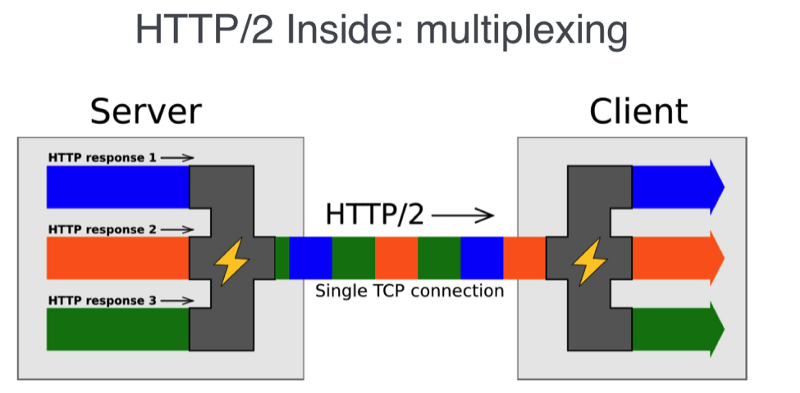
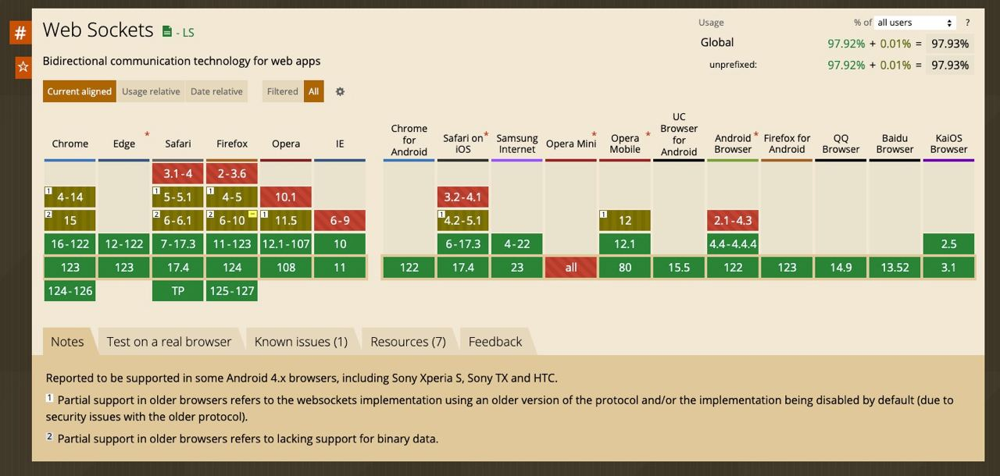
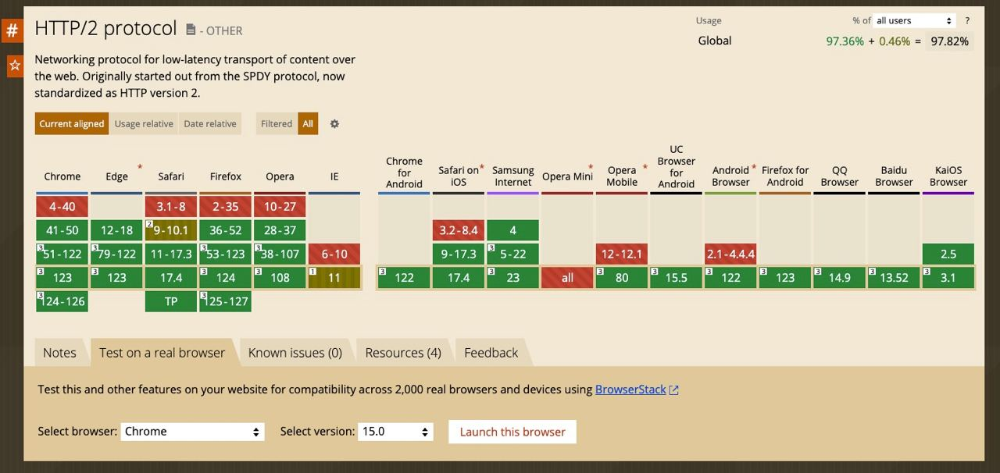

SSE vs WebSockets: сравнение двух технологий в веб-разработке
Тагай Алдияр
Software Developer in Digital Window
Что такое WebSocket?
- Определение WebSocket.
- Принцип работы WebSocket.
- Преимущества WebSocket:
- Недостатки WebSocket.

Упрощённый пример заголовков исходного запроса
HTTP/1.1 101 Switching Protocols
Date: Wed, 25 Oct 2017 10:07:34 GMT
Connection: Upgrade
Upgrade: WebSocket
Что такое SSE?
- Определение SSE.
- Принцип работы SSE.
- Основные характеристики.
- Преимущества SSE.

На сервере (Node.js с использованием Express):
На клиенте (JavaScript):
HTTP/2 - новый уровень веб-коммуникации

HTTP/2 - новый уровень веб-коммуникации

Поддержка веб-браузеров
Поддержка веб-браузеров

Сходства и различия между SSE и WebSocket
| Критерий | HTTP/2 | WebSocket |
|---|---|---|
| Сжатие заголовков | Да | Нет |
| Передача бинарных данных | Да | Да(бинарные и текстовые) |
| Мультиплексирование | Да | Да |
| Приоритизация | Да | Нет |
| Направление | Клиент/Сервер и Server Push | Двунаправленная передача данных |